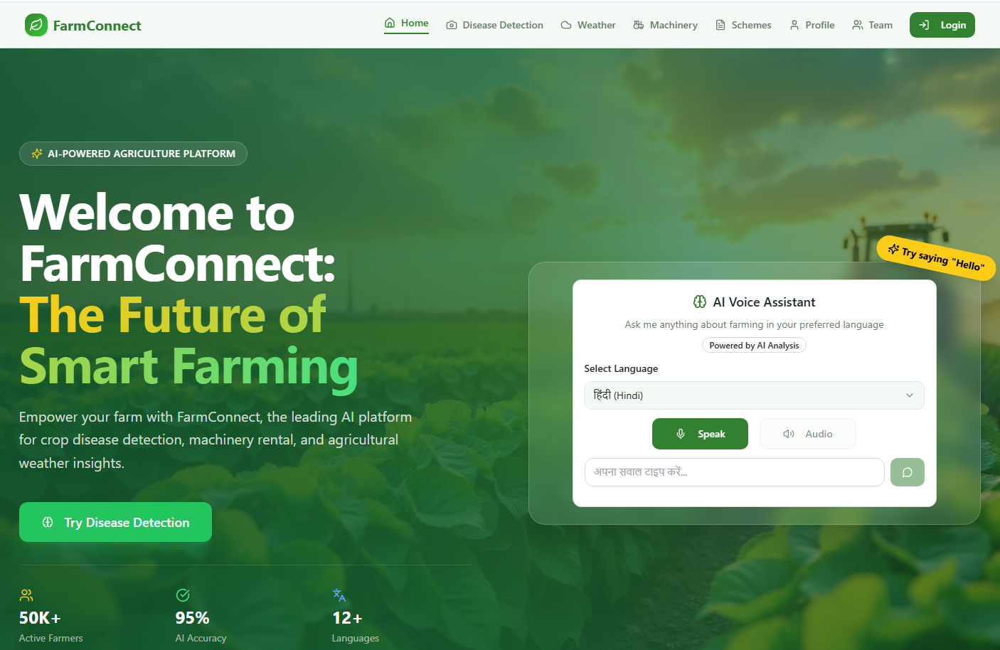
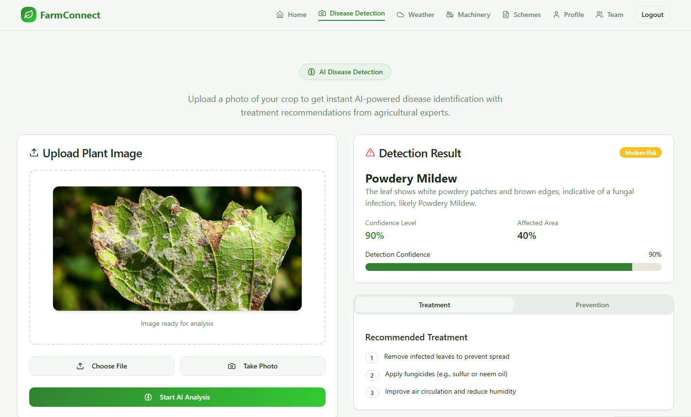
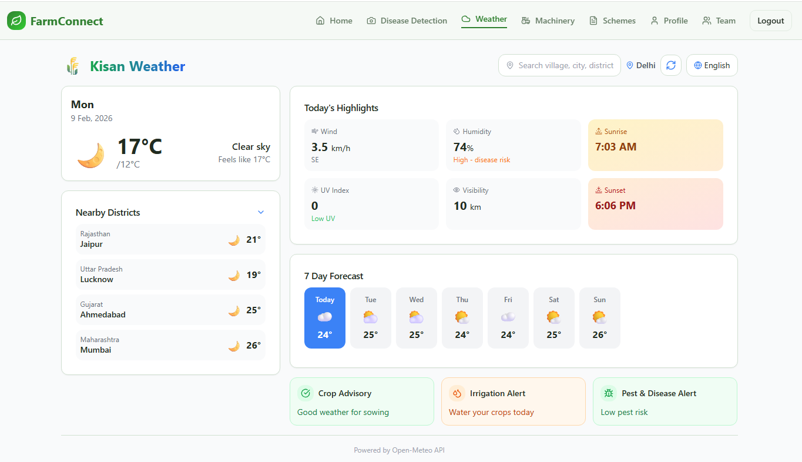
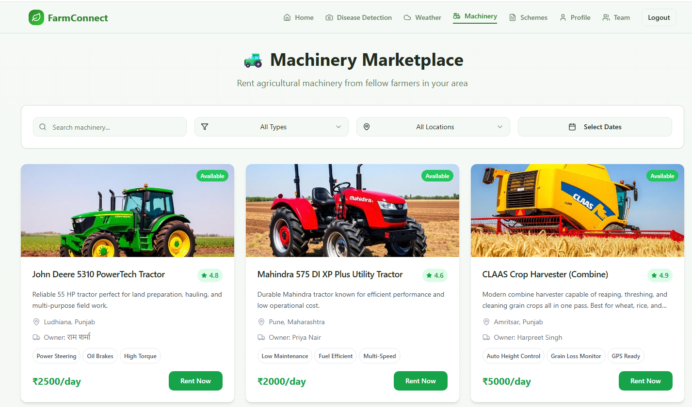
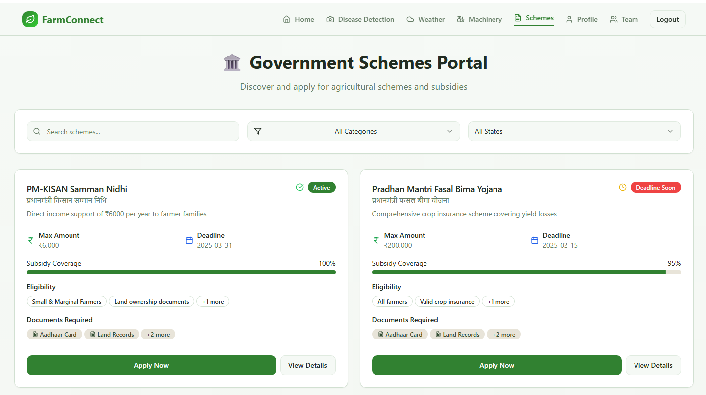

Empowering Indian Farmers Through Innovation
Presented By
| Problem | Our Solution |
|---|---|
| Information fragmented across multiple platforms | Unified single-interface platform |
| Delayed disease identification (15-25% crop losses annually) | AI-powered instant crop disease detection |
| Language barriers & low digital literacy among farmers | Multilingual voice interface (5 regional languages) |
| Limited access to government schemes & subsidies | Searchable schemes portal with eligibility filters |
| High cost of agricultural machinery | Peer-to-peer machinery rental marketplace |
| Weather vulnerability & unpredictable farming conditions | Real-time weather dashboard with AI farming insights |
To develop a comprehensive, multi-functional Agriculture Support System that empowers farmers by providing real-time information, service access, early warnings, and easy access to schemes and machinery through a user-friendly interface that supports regional languages and voice inputs.
Providing instant, relevant data to farmers including weather, risk alerts, and advisories.
Connecting farmers with machinery owners through a rental marketplace with search and booking.
Alerting farmers to potential threats like disease outbreaks through AI-powered detection.
Facilitating easier access to government schemes and agricultural machinery.
| Layer | Technologies |
|---|---|
| Frontend | React 18, TypeScript, Tailwind CSS, Vite |
| Backend | Node.js, Express.js, MongoDB |
| AI Services | Groq LLM, Google Gemini AI |
| APIs | WeatherAPI, Web Speech API |
| DevOps | Docker, Vercel, GitHub |
Semester 7 delivered a working MVP. Semester 8 is reserved for full workflow completion, quality hardening, and final validation.





Live Demo: https://farmbro.vercel.app/
Demo shows Semester-7 MVP. Semester-8 closure items are listed in roadmap slides.
security audit, load testing, full integration testing, multilingual voice validation, and UAT sign-off.
MVP is stable for demonstration and feedback.
Production-grade hardening is intentionally scheduled for Semester 8.
MVP architecture, core modules, cloud deployment, and baseline testing completed.
- Finalize machinery booking lifecycle (request, approval, status updates)
- Complete owner dashboard workflows and booking management
- Close messaging flow between renter and owner
- Integrate custom TFJS disease model as production option
- Add review/rating, PWA install/offline support, and notification handling
- Execute security, load, and full integration testing
Bug fixing, documentation freeze, demo video, viva preparation, and final submission.
| Resource | Purpose | Status |
|---|---|---|
| Vercel Hosting | Frontend & Backend deployment | ✓ Free tier used |
| MongoDB Atlas | Cloud database storage | ✓ Free tier used |
| Groq API | AI disease detection & chatbot | ✓ Free API key |
| Google Gemini API | Alternative AI provider | ✓ Free tier used |
| WeatherAPI | Weather data integration | ✓ Free tier used |
| Development Devices | Testing on multiple devices | ✓ Team devices |
The entire project is built using free-tier cloud services, making it cost-effective and easily deployable.
Semester 7: functional MVP complete. Semester 8: quality completion, validation depth, and final academic deliverables.
Questions & Discussion
Department of CSE, NIT, Nagpur | https://nit.edu.in/computer-science-engineering/